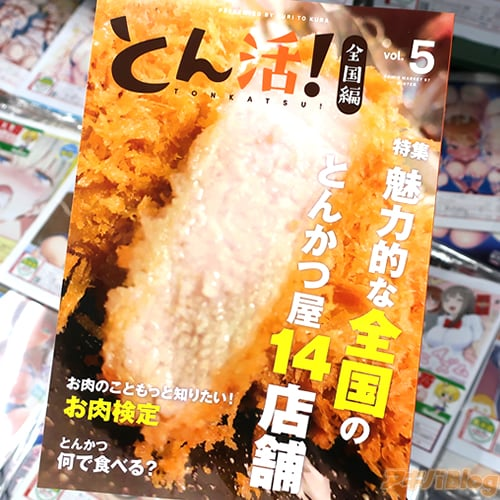

돈까스 동인지 돈까스! Vol.5 전국편 (일본 전국 맛집 멋집 돈까스집 소개)
돈까스 동인지 돈까스! Vol.5 전국편 (일본 전국 맛집 멋집 돈까스집 소개)

동인 작가 써클 밤나무와 곶간의 돈까스 동인지 [돈까스! Vol.5 전국편]
소금절임 특상 리브심지 돈까스
(고기가 아주 부드럽고 입안에서 고기의 육즙이 터지는 듯한 식감)
와카바 (후쿠오카)
카고시마산 운마카 상급 등심(돼지) 커틀릿 정식 입니다.
후쿠오카 텐진에 있는 엄선한 빵가루와 저온에서 튀긴 명품 돼지고기 입니다.
야바톤 본점(아이치현)과 라지사이즈 돈까스 정식(기본 소스와 된장소스 반반)
된장소스와 기본 소스 두가지 맛을 즐길수 있는 짚신 돈까스
동인 작가 써클 밤나무와 곶간(쿠리코씨)의 겨울 코미케 신간으로
돈까스 동인지 (돈까스! Vol.5 전국편)이, 멜론북스에 입하되었다.
쿡팬 오아라이 출장소 (이바라키현)
요시베 (효고현)
카츠세이 (미야기현)
돈팔 (아이치현)
카와히사 (카고시마현)
쿠레토미 DIA PARK PREMIRE (인도)